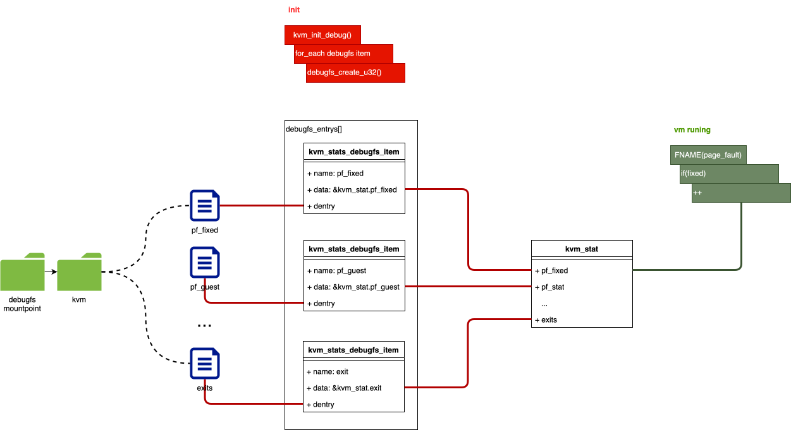
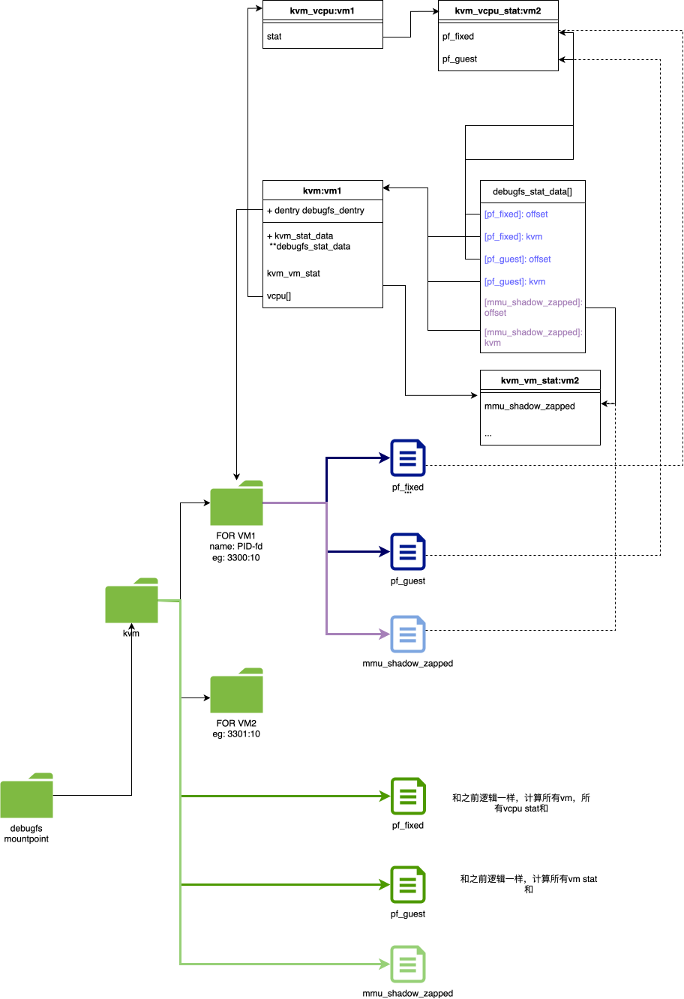

kvm stats
背景
我们如果对一个只启动bios的虚拟机做热迁移，发现其实际迁移的数据量不大， 如下:
qemu 参数:
1
2
3
4
# src
qemu-system-x86_64 -m 16G --nographic --enable-kvm --serial tcp:localhost:6666,server,nowait --monitor stdio
# dst:
qemu-system-x86_64 --incoming tcp:xxxx:9000 -m 16G --nographic --enable-kvm
执行热迁移命令:
1
2
3
4
5
6
7
8
9
10
11
12
13
14
15
16
17
18
19
20
21
22
23
24
25
26
27
(qemu) migrate -d tcp:xxxx:9000
(qemu) info migrate
globals:
store-global-state: on
only-migratable: off
send-configuration: on
send-section-footer: on
decompress-error-check: on
clear-bitmap-shift: 18
Migration status: completed
total time: 3064 ms
downtime: 10 ms
setup: 6 ms
transferred ram: 38349 kbytes
throughput: 102.73 mbps
remaining ram: 0 kbytes
total ram: 16794440 kbytes
duplicate: 4198330 pages
skipped: 0 pages
normal: 283 pages
normal bytes: 1132 kbytes
dirty sync count: 3
page size: 4 kbytes
multifd bytes: 0 kbytes
pages-per-second: 1387941
precopy ram: 38022 kbytes
downtime ram: 12 kbytes
可以发现
transferrd ram: 37Mnormal: 283 pagesduplicate: 4198330 pages
其中normal 表示正常发送的页, duplicate 表示一些特殊处理的页，可能 多个page只发送一份，或者只发送特征（如zero page，就无需发送实际数据).
NOTE
TODO: XXX 我们在XXXX 中会介绍，在qemu read Page 时，会不会触发 mmu notify to kvm mmu page
而VM在启动初期，guest大部分内存都不会访问，所以大部分内存在qemu看起来 都是zero page。
我们来看下这部分内存qemu是如何处理的。
details
QEMU migration save page
热迁移save page 流程大致如下:
1
2
3
4
5
6
7
8
9
10
11
12
13
14
15
16
17
18
19
20
21
22
23
24
25
26
27
28
29
30
31
32
33
34
35
36
37
38
39
40
41
42
43
44
45
46
47
48
49
50
51
52
53
54
qemu_savevm_state_iterate
=> foreach_savevm_state(se)
=> se->ops->save_live_iterate()
=> ram_find_and_save_block
=> get_queued_page() # for post copy
# 从ramlist.blocks的bitmap中获取到dirty RAMBlocks
=> found = find_dirty_block()
=> if found
# 将RAMBlocks->dirty_bitmap
=> ram_save_host_page
ram_save_host_page
=> foreach dirtybitmap bit
=> migration_bitmap_clear_dirty ## deley clean log
=> migration_clear_memory_region_dirty_bitmap
=> memory_region_clear_dirty_bitmap
=> foeach memorylistener
## nodify kvm set WP or clear D
=> listener->log_clear()
=> test_and_clear_bit(page, rb->bmap); # rb = RAMBlock
=> rs->migration_dirty_pages--
=> ram_save_target_page ## save page
=> control_save_page() ## control pages
## compress ....
=> if (save_compress_page()) return 1;
## ------(1)-----
=> save_zero_page()
=> len += save_zero_page_to_file()
=> if (is_zero_range(p, TARGET_PAGE_SIZE))
## only transport FREW Bytes
=> len += HEADER
=> return 0;
## !!!!
=> if (len)
=> ram_counters.duplicate++;
=> ram_counters.transferred += len;
=> return 1
=> else
## means not zero page
=> return -1;
=> XBZERLE handler... return
=> multifd handler ... return
=> ram_save_page()
=> save_normal_page()
=> save_page_header()
=> if async ## XBZLER related
=> qemu_put_buffer_async
=> else
## ------(2)------
## !!!!!! transport HOLE page !!!!
=> qemu_put_buffer(TARGET_PAGE_SIZE)
=> ram_counters.transferred += header_bytes
=> ram_counters.transferred += TARGET_PAGE_SIZE;
## !!!!
=> ram_counters.normal++;
判断zero page的的方法很简单，就是判断该页中的每一个byte是不是0， 当然有很多加速的指令，我们下面会介绍。
如果是zero page，则会发送很少量的数据（一些header数据），并且 自增ram_counters.duplicate, 如果不是zero page(还有一些其他的，暂时 不介绍), 则会发送header + 整个的page.
那么，我们在热迁移之前想看下这些zero page有多少, 如果zero page很多， 并且脏页速率很低，我们可以认为该机器比较适合热迁移，在各个节点资源调度时， 可以优先处理这部分机器。
我们来看下相关细节
How to determine if a page is a zero page
上面提到过，判断page是否是zero page的函数为is_zero_range, 大致 流程为:
1
2
3
4
5
6
7
8
is_zero_range()
=> buffer_is_zero()
=> __builtin_prefetch()
=> select_accel_fn()
=> if len >= length_to_accel
=> return buffer_accel()
## else
=> return buffer_zero_int
QEMU 会利用SIMD 对该操作做一些优化. 看下相关初始化代码:
1
2
3
4
5
6
7
8
9
10
11
12
13
init_cpuid_cache
=> cpuid(1,...)
=> init `cache` var base on cpuid
=> sse2 --> cache |= CACHE_SSE2
=> avx --> cache |= CACHE_SSE4
=> avx2 --> cache |= CACHE_AVX2
=> avx512f --> cache |= CACHE_AVX512F
=> cpuid_cache = cache
=> init_accel
=> if cache & CACHE_SSE2 buffer_accel = buffer_zero_sse2; length_to_accel = 64;
=> if cache & CACHE_SSE4 buffer_accel = buffer_zero_sse4; length_to_accel = 64;
=> if cache & CACHE_AVX2 buffer_accel = buffer_zero_avx2; length_to_accel = 128;
=> if cache & CACHE_AVX512F buffer_accel = buffer_zero_avx512; length_to_accel = 256;
做简单性能测试:
程序代码:
测试代码
1
2
3
4
5
6
7
8
9
10
11
12
13
14
15
16
17
18
19
20
21
22
23
24
25
26
27
28
29
30
31
32
33
34
35
36
37
38
39
40
41
42
43
44
45
46
47
48
49
50
51
52
53
54
55
56
57
58
59
60
61
62
63
64
65
66
67
68
69
70
71
72
73
74
75
76
77
78
79
80
81
82
83
84
85
86
87
88
89
90
91
92
93
94
95
96
97
98
99
100
101
102
103
104
105
106
107
108
109
110
111
112
113
114
115
116
117
118
119
120
121
122
123
124
125
126
127
128
129
130
131
132
133
134
135
136
137
138
139
140
141
142
143
144
145
146
147
148
149
150
151
152
153
154
155
156
157
158
159
160
161
162
163
164
165
166
167
168
169
170
171
172
173
#include <stdio.h>
#include <stdlib.h>
#include <immintrin.h>
#include <stdio.h>
#include <stdlib.h>
#include <sys/mman.h>
#include <fcntl.h>
#include <unistd.h>
#include <time.h>
#include <stdint.h>
#include <stdbool.h>
unsigned long length;
#define DATA 0
char * my_mmap(void) {
// 定义要分配的内存大小
// 使用 mmap 分配内存
length = 1024*1024*1024;
length = length * 1;
void* addr = mmap(NULL, length, PROT_READ | PROT_WRITE, MAP_PRIVATE | MAP_ANONYMOUS, -1, 0);
if (addr == MAP_FAILED) {
perror("mmap failed");
return NULL;
}
// 初始化随机数生成器
srand(time(NULL));
// 将内存初始化为随机数据
unsigned char* data = (unsigned char*)addr;
for (size_t i = 0; i < length; ++i) {
//data[i] = rand() % 256; // 生成 0 到 255 的随机字节
data[i] = DATA;
}
// 打印前 16 个字节的内容作为示例
printf("Random data:\n");
for (size_t i = 0; i < 16; ++i) {
printf("%02x ", data[i]);
}
printf("\n");
return addr;
}
static bool buffer_zero_avx2(const void *buf, size_t len)
{
/* Begin with an unaligned head of 32 bytes. */
__m256i t = _mm256_loadu_si256(buf);
__m256i *p = (__m256i *)(((uintptr_t)buf + 5 * 32) & -32);
__m256i *e = (__m256i *)(((uintptr_t)buf + len) & -32);
/* Loop over 32-byte aligned blocks of 128. */
while (p <= e) {
__builtin_prefetch(p);
if (!_mm256_testz_si256(t, t)) {
return false;
}
t = p[-4] | p[-3] | p[-2] | p[-1];
p += 4;
} ;
/* Finish the last block of 128 unaligned. */
t |= _mm256_loadu_si256(buf + len - 4 * 32);
t |= _mm256_loadu_si256(buf + len - 3 * 32);
t |= _mm256_loadu_si256(buf + len - 2 * 32);
t |= _mm256_loadu_si256(buf + len - 1 * 32);
return _mm256_testz_si256(t, t);
}
char *print_timestamp() {
// 获取当前时间
time_t raw_time;
struct tm *time_info;
static char buffer[80];
// 获取当前时间
time(&raw_time);
// 将时间转换为本地时间
time_info = localtime(&raw_time);
// 格式化时间为字符串
strftime(buffer, sizeof(buffer), "%Y-%m-%d %H:%M:%S", time_info);
// 打印时间戳
return buffer;
}
#define MY_DEB(...) do {printf("%s: ", print_timestamp()); printf(__VA_ARGS__);}while(0)
static inline uint64_t ldq_he_p(const void *ptr)
{
uint64_t r;
__builtin_memcpy(&r, ptr, sizeof(r));
return r;
}
static bool
buffer_zero_int(const void *buf, size_t len)
{
if (len < 8) {
/* For a very small buffer, simply accumulate all the bytes. */
const unsigned char *p = buf;
const unsigned char *e = buf + len;
unsigned char t = 0;
do {
t |= *p++;
} while (p < e);
return t == 0;
} else {
/* Otherwise, use the unaligned memory access functions to
handle the beginning and end of the buffer, with a couple
of loops handling the middle aligned section. */
uint64_t t = ldq_he_p(buf);
const uint64_t *p = (uint64_t *)(((uintptr_t)buf + 8) & -8);
const uint64_t *e = (uint64_t *)(((uintptr_t)buf + len) & -8);
for (; p + 8 <= e; p += 8) {
__builtin_prefetch(p + 8);
if (t) {
return false;
}
t = p[0] | p[1] | p[2] | p[3] | p[4] | p[5] | p[6] | p[7];
}
while (p < e) {
t |= *p++;
}
t |= ldq_he_p(buf + len - 8);
return t == 0;
}
}
int main()
{
char *buffer;
size_t len = 0;
int i = 0;
int j = 0;
MY_DEB("mmap begin \n");
buffer = my_mmap();
MY_DEB("mmap end \n");
MY_DEB("random end\n");
for (i = 0; i < 30; i++) {
if (i % 10 == 0) {
MY_DEB("i = %d\n", i);
}
for (j = 0; j < length; j=j+4096) {
buffer_zero_avx2(buffer + j, 4096);
}
}
MY_DEB("buffer zero avx end\n");
for (i = 0; i < 30; i++) {
if (i % 10 == 0) {
MY_DEB("i = %d\n", i);
}
for (j = 0; j < length; j=j+4096) {
buffer_zero_int(buffer + j, 4096);
}
}
MY_DEB("buffer zero int\n");
while(1) sleep(10);
return 0;
}
该部分代码主要copy qemu的 buffer_zero_xxx, 并在Intel(R) Xeon(R) CPU E5-2640 v3 @ 2.60GHz cpu上进行测试. DATA设置为0，性能最差.
我们主要以其为基准得到测试结果
1
2
3
4
5
6
7
8
9
10
11
12
Random data:
00 00 00 00 00 00 00 00 00 00 00 00 00 00 00 00
2024-12-02 15:34:01: mmap end
2024-12-02 15:34:01: random end
2024-12-02 15:34:01: i = 0
...
2024-12-02 15:34:09: i = 90
2024-12-02 15:34:10: buffer zero avx end
2024-12-02 15:34:10: i = 0
...
2024-12-02 15:34:20: i = 90
2024-12-02 15:34:22: buffer zero int
令人意外的是，两者性能差距并不是很大，大概都是1s处理10G数据。不过无论是哪种方法， 性能都不符合当前需求。
能不能通过一种粗略的方式，来获取KVM 建立 ept 映射 内存的数量, 来粗略估计zero page 数量。
内核中提供了kvm stats 相关api，可以完成这个事情。我们先来看下kvm stats 相关历史.
kvm stat
ORG KVM PATCH
KVM stat 其实在 kvm的第一个patch中就引入了，当时的kvm stats 比较简单，使用全局变量 来进行全局的 kvm 事件统计, 并通过debugfs来和用户态交互。
全局变量
1 2 3 4 5 6 7 8 9 10 11 12 13 14
struct kvm_stat { u32 pf_fixed; u32 pf_guest; u32 tlb_flush; u32 invlpg; u32 exits; u32 io_exits; u32 mmio_exits; u32 signal_exits; u32 irq_exits; }; struct kvm_stat kvm_stat;
debugfs 相关
1 2 3 4 5 6 7 8 9 10 11 12 13 14 15 16 17 18 19 20 21 22 23 24 25
static struct kvm_stats_debugfs_item { const char *name; u32 *data; struct dentry *dentry; } debugfs_entries[] = { { "pf_fixed", &kvm_stat.pf_fixed }, { "pf_guest", &kvm_stat.pf_guest }, { "tlb_flush", &kvm_stat.tlb_flush }, { "invlpg", &kvm_stat.invlpg }, { "exits", &kvm_stat.exits }, { "io_exits", &kvm_stat.io_exits }, { "mmio_exits", &kvm_stat.mmio_exits }, { "signal_exits", &kvm_stat.signal_exits }, { "irq_exits", &kvm_stat.irq_exits }, { 0, 0 } }; static __init void kvm_init_debug(void) { struct kvm_stats_debugfs_item *p; debugfs_dir = debugfs_create_dir("kvm", 0); for (p = debugfs_entries; p->name; ++p) p->dentry = debugfs_create_u32(p->name, 0444, debugfs_dir, p->data); }
以
pf_fixed为例，其会在fixed page fault exception，相关处理流程中自增1 2 3 4 5 6 7 8 9
FNAME(page_fault) => if write_fault # main use for dirty tracking => fixed = FNAME(fix_write_pf) => else # for emulate CR4.WP => fixed = fix_read_pf() => if fixed => ++kvm_stat.pf_fixed;
总结为下图:

per-vcpu stat
全局变量有个很大的问题，就是cacheline抖动。很主流的做法就是将全局变量”split”, 例如percpu var, 让每个vcpu访问自己的变量。
avi 的做法则是将kvm_stat, 放到kvm_vcpu结构中，每个vcpu thread访问自己的变量。 下面是commit message:
1
2
3
Make the exit statistics per-vcpu instead of global. This gives a 3.5%
boost when running one virtual machine per core on my two socket dual core
(4 cores total) machine.
avi发现在numa(2 numa 4 core)架构上大概有3.5%的提升。
具体改动:
- 删除
struct kvm_stat kvm_stat全局变量定义，在kvm_vcpu中添加该成员:1 2 3 4 5 6 7 8 9 10 11 12 13 14
@@ -298,6 +314,8 @@ struct kvm_vcpu { int sigset_active; sigset_t sigset; + struct kvm_stat stat; + struct { int active; u8 save_iopl; ... -struct kvm_stat kvm_stat; -EXPORT_SYMBOL_GPL(kvm_stat);
- 修改
kvm_stats_debugfs_item定义，将data修改为offset记录该stat.xxx在kvm_vcpu 变量中的offset ```diff +#define STAT_OFFSET(x) offsetof(struct kvm_vcpu, stat.x) static struct kvm_stats_debugfs_item { const char *name;- u32 *data;
- int offset; struct dentry *dentry; } debugfs_entries[] = {
- { “pf_fixed”, &kvm_stat.pf_fixed }, …
- { “pf_fixed”, STAT_OFFSET(pf_fixed) }, ```
修改debugfs file ops, 在read该debugfs file时，需要将per vm && per vcpu的stat 将加
代码细节
修改创建debugfsfile的接口，使用自定义的ops
1 2 3 4 5 6 7 8 9 10 11 12 13
+DEFINE_SIMPLE_ATTRIBUTE(stat_fops, stat_get, stat_set, "%llu\n"); static __init void kvm_init_debug(void) { struct kvm_stats_debugfs_item *p; debugfs_dir = debugfs_create_dir("kvm", NULL); for (p = debugfs_entries; p->name; ++p) - p->dentry = debugfs_create_u32(p->name, 0444, debugfs_dir, - p->data); + p->dentry = debugfs_create_file(p->name, 0444, debugfs_dir, + (void *)(long)p->offset, + &stat_fops); }
统计时，遍历per vm，然后再遍历per vm的per vcpu, 相加得和
1 2 3 4 5 6 7 8 9 10 11 12 13 14 15 16 17
+static u64 stat_get(void *_offset) +{ + unsigned offset = (long)_offset; + u64 total = 0; + struct kvm *kvm; + struct kvm_vcpu *vcpu; + int i; + + spin_lock(&kvm_lock); + list_for_each_entry(kvm, &vm_list, vm_list) + for (i = 0; i < KVM_MAX_VCPUS; ++i) { + vcpu = &kvm->vcpus[i]; + total += *(u32 *)((void *)vcpu + offset); + } + spin_unlock(&kvm_lock); + return total; +}
extend stat to vcpu stat and vm stat
avi可能觉得, 有一些事件，是和vcpu无关的，应该以 vm为颗粒记录，所以又提供了一个per vm stat的统计颗粒。
实现方式和上一个patch类似.
代码细节
- 将之前stat相关符号，修改为vcpu_stat
struct kvm_stat->struct kvm_vcpu_statstat_fops->vcpu_stat_fopsstat_get->vcpu_stat_getSTAT_OFFSET->VCPU_STAT
- 在
struct kvm中增加kvm_vm_stat数据结构 在
kvm_stat_debugfs_item中增加 kind成员，用来标识，该item是per-vm，还是per-vcpu1 2 3 4 5 6 7 8 9 10 11
+enum kvm_stat_kind { + KVM_STAT_VM, + KVM_STAT_VCPU, +}; + struct kvm_stats_debugfs_item { const char *name; int offset; + enum kvm_stat_kind kind; struct dentry *dentry; };
增加
KVM_STAT_VM4的相关fops1 2 3 4 5 6 7 8 9 10 11 12 13 14
+static u64 vm_stat_get(void *_offset) +{ + unsigned offset = (long)_offset; + u64 total = 0; + struct kvm *kvm; + + spin_lock(&kvm_lock); + list_for_each_entry(kvm, &vm_list, vm_list) + total += *(u32 *)((void *)kvm + offset); + spin_unlock(&kvm_lock); + return total; +} + +DEFINE_SIMPLE_ATTRIBUTE(vm_stat_fops, vm_stat_get, NULL, "%llu\n");在创建debugfs file时，需要根据
kvm_stat_kind, 来选择相应的ops:1 2 3 4 5 6 7 8 9 10 11 12 13 14
+static struct file_operations *stat_fops[] = { + [KVM_STAT_VCPU] = &vcpu_stat_fops, + [KVM_STAT_VM] = &vm_stat_fops, +}; statvoid kvm_init_debug(void) { @@ -1310,7 +1330,7 @@ static void kvm_init_debug(void) for (p = debugfs_entries; p->name; ++p) p->dentry = debugfs_create_file(p->name, 0444, debugfs_dir, (void *)(long)p->offset, - &stat_fops); + stat_fops[p->kind]); }
然后，在随后的patch中, 增加了mmu stats
1
2
3
4
5
6
7
8
9
10
11
12
13
14
15
16
17
18
19
20
struct kvm_vm_stat {
+ u32 mmu_shadow_zapped;
+ u32 mmu_pte_write;
+ u32 mmu_pte_updated;
+ u32 mmu_pde_zapped;
+ u32 mmu_flooded;+ u32 mmu_recycled;
};
@@ -66,6 +66,12 @@ struct kvm_stats_debugfs_item debugfs_entries[] = {
{ "fpu_reload", VCPU_STAT(fpu_reload) },
{ "insn_emulation", VCPU_STAT(insn_emulation) },
{ "insn_emulation_fail", VCPU_STAT(insn_emulation_fail) },
+ { "mmu_shadow_zapped", VM_STAT(mmu_shadow_zapped) },
+ { "mmu_pte_write", VM_STAT(mmu_pte_write) },
+ { "mmu_pte_updated", VM_STAT(mmu_pte_updatsed) },
+ { "mmu_pde_zapped", VM_STAT(mmu_pde_zapped) },
+ { "mmu_flooded", VM_STAT(mmu_flooded) },
+ { "mmu_recycled", VM_STAT(mmu_recycled) },
{ NULL }
};
per vm kvm stat user api
上面的改动，虽然减小了统计的颗粒(per vm, per vcpu)，但是展示给用户空间的api 还是以全局的颗粒度。
Janosch Frank 做了一些工作允许userspace通过debugfs 获取每个vm的stat，同时保证了兼容性，也允许全局的统计。
其具体做法, 为每一个vm在kvm下，增加一个目录，然后，里面创建和原来相同的文件， 只不过访问其中的文件，只会获取当前vm的stat， 相关代码不再展开，简单画图表示:

其中，为每个vm创建debugfs dir，然后在每个vm 的debugfs dir, 创建和全局的相同文件。 访问该文件时，需要对其kvm以及stat entry进行选定，该流程通过debugfs_stat_data[]实现， 该数据结构中主要定义两个成员
- kvm: 找到其kvm
- offset: 用来定义get所对应的数据在
kvm_vcpu/kvm中的offset
那有的同学可能就会问了，由于debugfs_stat_data中只存了kvm，没有存kvm_vcpu, 所以 没有办法display per-vcpu stat。
确实是这样。所以这个patch只是实现了per vm stat display, 对于像pf_fixed, pf_guest 这样的per cpustat, 目前的做法时，将所有vcpu的相加，作为整个vm 的stat display.
per vcpu kvm stat user api
Luiz 为了支持trace-cmd guest host merge, 需要将tsc-offset, tsc-scaling-ratio和 tsc-scaling-ratio-frac-bits等信息提供给用户态，这些信息并非事件统计，而是一个 属性值, 而某些事件又是vcpu颗粒的，例如tsc-offset, tsc-scaling-ratio, 这些信息必须以vcpu为颗粒统计.
所以, Luiz在per-vm的dir下，又创建了vcpux debugfs dir，并在里面创建tsc相关的debugfsfile。 新增文件路径如下:
1
2
3
/sys/kernel/debug/kvm/66828-10/vcpu0/tsc-offset
/sys/kernel/debug/kvm/66828-10/vcpu0/tsc-scaling-ratio
/sys/kernel/debug/kvm/66828-10/vcpu0/tsc-scaling-ratio-frac-bits
代码较简单, 不再展示
kvm stat basefd
(略, 之后再补充)
参考链接
- KVM: Per-vcpu statistics
- https://lore.kernel.org/all/1198998638-22713-8-git-send-email-avi@qumranet.com/
- commit: 1165f5fec18c077bdba88e7125fd41f8e3617cb4
- Author: Avi Kivity avi@qumranet.com
- Date: 2007-04-19
- 后续patch: https://lore.kernel.org/all/1198998638-22713-9-git-send-email-avi@qumranet.com/
- KVM: Extend stats support for VM stats
- commit: ba1389b7a04de07e6231693b7ebb34f5b5d1a3e6
- Author: Avi Kivity
- Date: 2007-11-18
- KVM: Create debugfs dir and stat files for each VM
- [MAIL: KVM: Create debugfs dir and stat files for each VM][MAIL_PER_VM_STAT]
- commit: 536a6f88c49dd739961ffd53774775afed852c83
- Author: Janosch Frank frankja@linux.vnet.ibm.com
- Date: 2016-05-18
- kvm: x86: export TSC information to user-space
- KVM stat basedfd mail
- QEMU kvm stat based-fd mail
note
1
2
3
4
5
6
7
commit ba1389b7a04de07e6231693b7ebb34f5b5d1a3e6
Author: Avi Kivity <avi@qumranet.com>
Date: Sun Nov 18 16:24:12 2007 +0200
KVM: Extend stats support for VM stats
This is in addition to the current virtual cpu statistics.